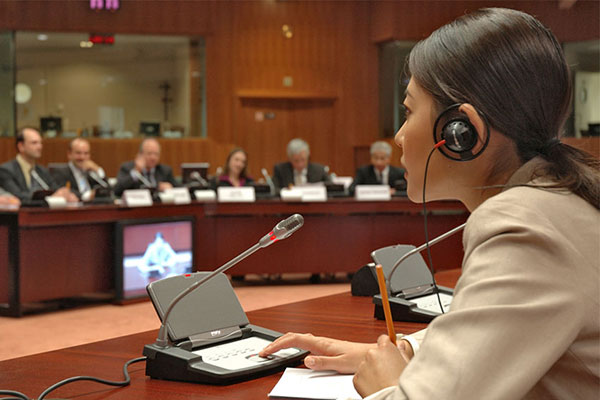

Simultaneous / Conference Interpreting
It is malpractice to ask a bilingual staff member to perform simultaneous interpreting in a conference / workshop. This skill takes years to train. Many professional interpreters cannot do it well. In Australia, only a few can really perform this mode of interpreting.
At ELITE ITT, we pride ourselves on our advanced simultaneous / conference interpreting, which is sought by government bodies, international organizations, private entities, universities, businesses, local television networks, etc. We provide world-class simultaneous / conference interpreting services in all areas of expertise in Sydney, Australia wide and globally.
Why choose ELITE ITT
for all your (Vietnamese and English) simultaneous / conference interpreting needs?
Throughout the years, we have made a name for ourselves as the provider of unequalled simultaneous / conference interpreting services in the English and Vietnamese languages. Our simultaneous / conference interpreting quality is strictly controlled and assured by our Principal Interpreter _ Dr Giao Quynh Tran _ who is a skilled and experienced English and Vietnamese simultaneous / conference interpreter herself.
Dr Tran has performed a great deal of simultaneous / conference interpreting both in Australia (e.g. Sydney, Melbourne and Canberra) and overseas (e.g. Vietnam, Germany, Italy, Taiwan and Korea). Her simultaneous / conference interpreting has time and again been complimented on by the speakers and the audience on live TV and in press conferences, court proceedings, international conferences as well as workshops on politics, diplomacy, law, science, technology, business, environment, humanities, etc.
Contact us for all your simultaneous / conference interpreting needs.
10 Thurlow St
Riverwood NSW 2210 Australia
(02) 9533 5349
0423 619 818